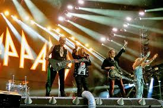
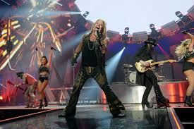

The #4 best concert I’ve ever been to was The Stadium Tour. This show was in Denver, Colorado, and involved four great artists. I was with my brother and dad. The four bands performing were Poison, Joan Jett and the Blackhearts, Def Leppard, and Mötley Crüe, and it was a perfect grouping.
Poison began with a lot of energy, as the lead singer, Bret Michaels, seemed pumped on the stage. They didn’t attempt to put fans onto less known music, but rather played their top hits, as they knew what the fans wanted. The crowd knew the lyrics, and everyone had a great time. It was followed with Joan Jett and the Blackhearts. Joan Jett sang her heart out, as her vocals sounded just as good as when she released the music. It was a great performance, and both of these shows were the perfect beginning to what would be a fantastic concert.
The next band was Def Leppard. There was an excitement that could be felt throughout the stadium, as this was the co-main event. Def Leppard was exciting immediately, playing songs like ‘Pour Some Sugar on Me’ and ‘Rocket’. Frontman Joe Elliot’s vocals filled the air, and blessed everyone with a wonderful performance. Rick Allen, the drummer, with one of the most inspiring stories, having lost an arm in an accident, rocked. It was overall a fantastic performance, and left Mötley Crüe to take the stage.
Mötley Crüe, with a long list of hits, came out rocking. Playing songs like ‘Live Wire’ early, and finishing with songs like ‘Kickstart My Heart’, there was high octane rock the entire show. The reason this concert is not higher on my list is due to the lead singer of Mötley Crüe, Vince Neil, who lost a lot of his spark, as his vocals did not meet the high quality that the rest of the band came with. However, it was still a great show, and the Stadium Tour was overall an unforgettable experience.
